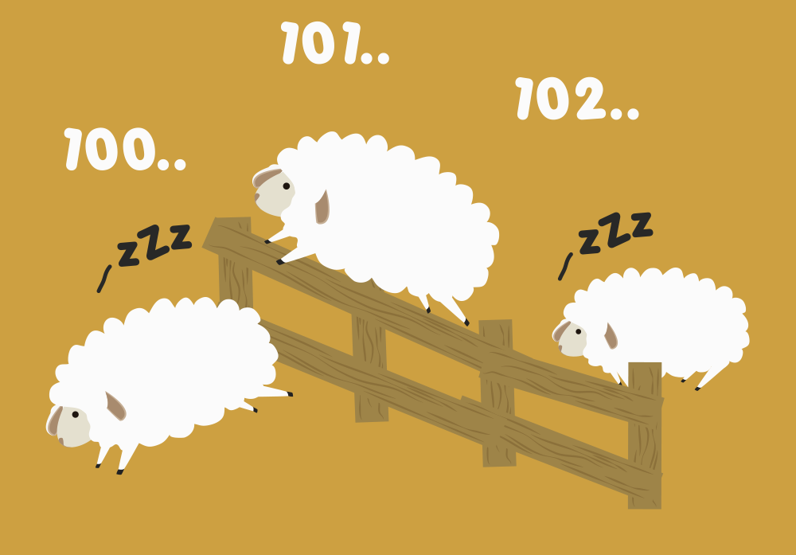

Sweet Dreams (Are Made Of This)
Sweet dreams are made of this
// 'to be' with 3rd person plural
Who am I to disagree?
// 'to be' in a question form
I traveled the world and the seven seas
// 'to travel' at the past simple
Everybody's looking for something
// 'to be' with 2nd person singular
Some of them want to use you
// 'you' as an object pronoun
Some of them want to get used by you
Some of them want to abuse you
Some of them want to be abused

Sweet dreams are made of this
Who am I to disagree?
I traveled the world and the seven seas
Everybody's looking for something

Hold your head up
// 'to hold' in the imperative form
Keep your head up (movin' on)
// 'to keep' in the imperative form
Hold your head up (movin' on)
Keep your head up (movin' on)

Hold your head up (movin' on)
Keep your head up (movin' on)
Hold your head up (movin' on)
Keep your head up
Some of them want to use you
Some of them want to get used by you
Some of them want to abuse you
Some of them want to be abused
Sweet dreams are made of this
Who am I to disagree?
I traveled the world and the seven seas
// 'seven seas' and 'the world' as direct objects of 'to travel' verb
Everybody's looking for something